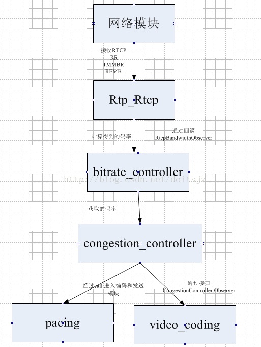

本来想要自己写一篇文章，但是网上已经有很好的文章了，所以这里直接综合转载；
文章前面的部分是简单总结，后面是转载的文章；
名词解释：
GCC谷歌提出的拥塞控制算法(Google Congestion Control，简称GCC[1])来控制发送端码率
TransportCC：
REMB： Receiver Estimated Maximum Bitrate, 接收端最大接收码率估测，接收端会估计本地接收的最大带宽能力，并通过rtcp remb 消息返回给对端，这样对端可以调整自己的发送端码率，达到动态调整带宽得目的
丢包率：
goog-remb：google实现了自己版本的remb；
协议文档：https://tools.ietf.org/html/draft-alvestrand-rmcat-remb-03
NACK：丢包重传
delay_based： 基于延时； recv端根据延时计算bitrate，remb返回到send端；
loss_base ： 基于丢包； send端接根据rtcp计算丢包率，计算bitrate；
接收延时：
RTT： 往返延时
RTX：
RED：
FEC：
UPL
FLEX
//从这里看webrtc中的Fec类型；
//主要模块：VCMNackFecMethod
//主要参数通过rtt判断当前FEC模式；
enum class FecMechanism {
RED,
RED_AND_ULPFEC,
FLEXFEC,
};
//从这看Rtcp中的Feedback类型；
// Used in RtcpFeedback struct.
enum class RtcpFeedbackType {
CCM,
NACK,
REMB, // "goog-remb"
TRANSPORT_CC,
};
关于发送端的码率具体参数在：VideoSendStream::OnBitrateUpdated
webrtc58中的相关代码：
1：
classSendSideBandwidthEstimation；
webrtc58\src\webrtc\modules\bitrate_controller\send_side_bandwidth_estimation.h
SendSideBandwidthEstimation具体实现了码率计算的算法；
CurrentEstimate(int* bitrate, uint8_t* loss, int64_t* rtt) 获取码率，丢包率，往返延时；
uint32_t CapBitrateToThresholds(int64_t now_ms, uint32_t bitrate); 主要修真码率范围在最小和最大范围之间，和参考incoming bandwidth；
// Call periodically to update estimate.
void UpdateEstimate(int64_t now_ms);
// Call when we receive a RTCP message with TMMBR or REMB.
void UpdateReceiverEstimate(int64_t now_ms, uint32_t bandwidth);
TMMBR用于流控，请求发送端按指定的最大比特率传输数据流，通常用于网络抖动情况下保证VOIP通信的流畅性（临时降低质量）。
REMB接收端最大接收码率估测，接收端会估计本地接收的最大带宽能力，并通过rtcp
remb 消息返回给对端，这样对端可以调整自己的发送端码率，达到动态调整带宽得目的
这里可以看得出上述两个RTCP的反馈都是用同一个接收算法处理；
// Call when a new delay-based estimate is available.
void UpdateDelayBasedEstimate(int64_t now_ms, uint32_t bitrate_bps);
// Call when we receive a RTCP message with a ReceiveBlock. //其实就是基于丢包和rtt;
void UpdateReceiverBlock(uint8_t fraction_loss,
int64_t rtt,
int number_of_packets,
int64_t now_ms);
2.
classBitrateControllerImpl: public BitrateController
BitrateControllerImpl具体调声明和调用了SendSideBandwidthEstimation相关函数，通过process实现执行UpdateEstimate；
BitrateControllerImpl中 通过 RtcpBandwidthObserverImpl获取网络 延时 和 丢包 等状态被调用响应；
3.
//这个类的这个函数实现了网站状态变化的计算；
void BitrateControllerImpl::MaybeTriggerOnNetworkChanged() {
if (!observer_)
return;
uint32_t bitrate_bps;
uint8_t fraction_loss;
int64_t rtt;
if (GetNetworkParameters(&bitrate_bps, &fraction_loss, &rtt))
observer_->OnNetworkChanged(bitrate_bps, fraction_loss, rtt);
}
通过
RtcpBandwidthObserver* BitrateControllerImpl::CreateRtcpBandwidthObserver() {
return new RtcpBandwidthObserverImpl(this);
}
创建实例；
4.
//具体就是实现了REMB 和 丢包 两个bitrate获取，然后 通过BitrateControllerImpl里的相关设定参数，估算当前的码率；
//但是这个类，仅仅是Observer，所以会在别的地方调用；
class BitrateControllerImpl::RtcpBandwidthObserverImpl
: public RtcpBandwidthObserver{
public:
explicit RtcpBandwidthObserverImpl(BitrateControllerImpl* owner)
: owner_(owner) {
}
。。。
}
5.
接下来，RTCP接收：
classRTCPReceiver ;
很重要；
这个类实现了RTCP的原始packet 解析；
也就是说所有rtcp packe，先到这里解析；然后，在通过Observer分发到各个相关原始模块；
//获取接收rtcp pack，然后在里面解析，然后出发相关回调函数Observer；
RTCPReceiver::IncomingPacket(const uint8_t* packet, size_t packet_size)
//解析RTCP packet的函数；
.bool RTCPReceiver::ParseCompoundPacket(const uint8_t* packet_begin,
const uint8_t* packet_end,
PacketInformation* packet_information)
{。。。
switch (rtcp_block.type()) {
case rtcp::SenderReport::kPacketType:
HandleSenderReport(rtcp_block, packet_information);
break;
case rtcp::ReceiverReport::kPacketType:
HandleReceiverReport(rtcp_block, packet_information);
break;
case rtcp::Sdes::kPacketType:
HandleSdes(rtcp_block, packet_information);
break;
case rtcp::ExtendedReports::kPacketType:
HandleXr(rtcp_block, packet_information);
break;
case rtcp::Bye::kPacketType:
HandleBye(rtcp_block);
break;
case rtcp::Rtpfb::kPacketType:
switch (rtcp_block.fmt()) {
case rtcp::Nack::kFeedbackMessageType:
HandleNack(rtcp_block, packet_information);
break;
case rtcp::Tmmbr::kFeedbackMessageType:
HandleTmmbr(rtcp_block, packet_information);
break;
case rtcp::Tmmbn::kFeedbackMessageType:
HandleTmmbn(rtcp_block, packet_information);
break;
case rtcp::RapidResyncRequest::kFeedbackMessageType:
HandleSrReq(rtcp_block, packet_information);
break;
case rtcp::TransportFeedback::kFeedbackMessageType:
HandleTransportFeedback(rtcp_block, packet_information);
break;
default:
++num_skipped_packets_;
break;
}
break;
case rtcp::Psfb::kPacketType:
switch (rtcp_block.fmt()) {
case rtcp::Pli::kFeedbackMessageType:
HandlePli(rtcp_block, packet_information);
break;
case rtcp::Sli::kFeedbackMessageType:
HandleSli(rtcp_block, packet_information);
break;
case rtcp::Rpsi::kFeedbackMessageType:
HandleRpsi(rtcp_block, packet_information);
break;
case rtcp::Fir::kFeedbackMessageType:
HandleFir(rtcp_block, packet_information);
break;
case rtcp::Remb::kFeedbackMessageType:
HandlePsfbApp(rtcp_block, packet_information);
break;
default:
++num_skipped_packets_;
break;
}
break;
default:
++num_skipped_packets_;
break;
}
。。。
}
webrtc中的RTCP类型：
enum RTCPPacketType : uint32_t {
kRtcpReport = 0x0001,
kRtcpSr = 0x0002,
kRtcpRr = 0x0004,
kRtcpSdes = 0x0008,
kRtcpBye = 0x0010,
kRtcpPli = 0x0020,
kRtcpNack = 0x0040,
kRtcpFir = 0x0080,
kRtcpTmmbr = 0x0100,
kRtcpTmmbn = 0x0200,
kRtcpSrReq = 0x0400,
kRtcpXrVoipMetric = 0x0800,
kRtcpApp = 0x1000,
kRtcpSli = 0x4000,
kRtcpRpsi = 0x8000,
kRtcpRemb = 0x10000,
kRtcpTransmissionTimeOffset = 0x20000,
kRtcpXrReceiverReferenceTime = 0x40000,
kRtcpXrDlrrReportBlock = 0x80000,
kRtcpTransportFeedback = 0x100000,
kRtcpXrTargetBitrate = 0x200000
};
//通过上述rtcp pack分析，然后回调函数相关observe；
void RTCPReceiver::TriggerCallbacksFromRtcpPacket(const PacketInformation& packet_information)
通过上述分析，可以清楚的看到了RTCP的接收流程到网络码率计算的过程；简单画图：
RTCPReceiver -----> RtcpBandwidthObserverImpl
-----> BitrateControllerImpl -----> SendSideBandwidthEstimation
具体流程:
webrtc::SendSideBandwidthEstimation::UpdateDelayBasedEstimate
webrtc::BitrateControllerImpl::OnDelayBasedBweResult
webrtc::TransportFeedbackAdapter::OnTransportFeedback
webrtc::RTCPReceiver::TriggerCallbacksFromRtcpPacket
webrtc::RTCPReceiver::IncomingPacket
webrtc::ModuleRtpRtcpImpl::IncomingRtcpPacket
webrtc::internal::VideoSendStreamImpl::DeliverRtcp
webrtc::internal::VideoSendStream::DeliverRtcp
webrtc::internal::Call::DeliverRtcp
webrtc::internal::Call::DeliverPacket
cricket::WebRtcVideoChannel2::OnRtcpReceived
cricket::BaseChannel::OnPacketReceived
webrtc中已经建议将REMB的方式，修改为： 2.
Transport Feedback + a=rtcp-fb:100 transport-cc;
REMB：只将 接收端 根据丢包延时计算的码率返回到发送端，这样发送码率的计算逻辑在接收端实现；
Transport
Feedback + transport-cc；
RTCP
Feedback： 包含接收端延时；
transport-cc ： 根据返回的延时计算码率；
将接收端的根据延时获取码率算法，放到发送端实现；
转载如下文章：
WebRTC基于GCC的拥塞控制(上) - 算法分析
from：http://www.jianshu.com/p/0f7ee0e0b3be
WebRTC基于GCC的拥塞控制(下) - 实现分析
http://www.jianshu.com/p/5259a8659112
WebRTC的拥塞控制技术（Congestion Control）
http://www.jianshu.com/p/9061b6d0a901
http://blog.csdn.net/doitsjz/article/details/73412056
webrtc中的带宽自适应算法
http://blog.csdn.net/chenyefei/article/details/51896237
webrtc中rtcp反馈与码率控制模块分析
http://blog.csdn.net/mercy_pm/article/details/71474264
WebRTC的带宽评估的新变化
http://blog.csdn.net/volvet/article/details/62237375
WebRTC基于GCC的拥塞控制(上) - 算法分析
实时流媒体应用的最大特点是实时性，而延迟是实时性的最大敌人。从媒体收发端来讲，媒体数据的处理速度是造成延迟的重要原因；而从传输角度来讲，网络拥塞则是造成延迟的最主要原因。网络拥塞可能造成数据包丢失，也可能造成数据传输时间变长，延迟增大。
拥塞控制是实时流媒体应用质量保证(QoS)的重要手段之一，它在缓解网络拥堵、减小网络延迟、平滑数据传输等质量保证方面发挥重要作用。WebRTC通控制发送端数据发送码率来达到控制网络拥塞的目的，其采用谷歌提出的拥塞控制算法(Google Congestion Control，简称GCC[1])来控制发送端码率。
本文是关于WebRTC拥塞控制算法GCC的上半部分，主要集中于对算法的理论分析，力图对WebRTC的QoS有一个全面直观的认识。在下半部分，将深入WebRTC源代码内部，仔细分析GCC的实现细节。
1 GCC算法综述
Google关于GCC的RFC文档在文献[1]，该RFC目前处于草案状态，还没有成为IETF的正式RFC。此外，Google陆续发布了一系列论文[2][3][4]来论述该算法的实现细节，以及其在Google Hangouts、WebRTC等产品中的应用。本文主要根据这些文档资料，从理论上学习GCC算法。
GCC算法分两部分：发送端基于丢包率的码率控制和接收端基于延迟的码率控制。如图1所示。
图1 GCC算法整体结构基于丢包率的码率控制运行在发送端，依靠RTCP RR报文进行工作。WebRTC在发送端收到来自接收端的RTCP RR报文，根据其Report Block中携带的丢包率信息，动态调整发送端码率As。基于延迟的码率控制运行在接收端，WebRTC根据数据包到达的时间延迟，通过到达时间滤波器，估算出网络延迟m(t)，然后经过过载检测器判断当前网络的拥塞状况，最后在码率控制器根据规则计算出远端估计最大码率Ar。得到Ar之后，通过RTCP REMB报文返回发送端。发送端综合As、Ar和预配置的上下限，计算出最终的目标码率A，该码率会作用到Encoder、RTP和PacedSender等模块，控制发送端的码率。
2 发送端基于丢包率的码率控制
GCC算法在发送端基于丢包率控制发送码率，其基本思想是：丢包率反映网络拥塞状况。如果丢包率很小或者为0，说明网络状况良好，在不超过预设最大码率的情况下，可以增大发送端码率；反之如果丢包率变大，说明网络状况变差，此时应减少发送端码率。在其它情况下，发送端码率保持不变。
GCC使用的丢包率根据接收端RTP接收统计信息计算得到，通过RTCP RR报文中返回给发送端。RTCP RR报文统计接收端RTP接收信息，如Packet Loss，Jitter，DLSR等等，如图2所示：
图2 RTCP RR报文结构[5]发送端收到RTCP RR报文并解析得到丢包率后，根据图3公式计算发送端码率：当丢包率大于0.1时，说明网络发生拥塞，此时降低发送端码率；当丢包率小于0.02时，说明网络状况良好，此时增大发送端码率；其他情况下，发送端码率保持不变。
图3 GCC基于丢包率的码率计算公式[4]最终码率会作用于Encoder、RTP和PacedSender模块，用以在编码器内部调整码率和平滑发送端发送速率。
3 接收端基于延迟的码率控制
GCC算法在接收端基于数据包到达延迟估计发送码率Ar，然后通过RTCP REMB报文反馈到发送端，发送端把Ar作为最终目标码率的上限值。其基本思想是： RTP数据包的到达时间延迟m(i)反映网络拥塞状况。当延迟很小时，说明网络拥塞不严重，可以适当增大目标码率；当延迟变大时，说明网络拥塞变严重，需要减小目标码率；当延迟维持在一个低水平时，目标码率维持不变。
基于延时的拥塞控制由三个主要模块组成：到达时间滤波器，过载检查器和速率控制器；除此之外还有过载阈值自适应模块和REMB报文生成模块，如图1所示。下面分别论述其工作过程。
3.1 到达时间滤波器(Arrival-time Filter)
该模块用以计算相邻相邻两个数据包组的网络排队延迟m(i)。数据包组定义为一段时间内连续发送的数据包的集合。一系列数据包短时间里连续发送，这段时间称为突发时间，建议突发时间为5ms。不建议在突发时间内的包间隔时间做度量，而是把它们做为一组来测量。通过相邻两个数据包组的发送时间和到达时间，计算得到组间延迟d (i)。组间延迟示意图及计算公式如图4所示：
图4 组间延迟示意图T(i)是第i个数据包组中第一个数据包的发送时间，t(i)是第i个数据包组中最后一个数据包的到达时间。帧间延迟通过如下公式计算得到：
d(i) = t(i) – t(i-1) – (T(i) – T(i-1)) (3.1.1)公式1.3.1是d(i)的观测方程。另一方面，d(i)也可由如下状态方程得到：
d(i) = dL(i)/C(i) + w(i) (3.1.2) d(i) = dL(i)/C(i) + m(i) + v(i) (3.1.3)其中dL(i)表示相邻两帧的长度差，C(i)表示网络信道容量，m(i)表示网络排队延迟，v(i)表示零均值噪声。m(i)即是我们要求得的网络排队延迟。通过Kalman Filter可以求得该值。具体计算过程请参考文献[1][4][6]。
3.2 过载检测器(Over-use Detector)
该模块以到达时间滤波器计算得到的网络排队延迟m(i)为输入，结合当前阈值gamma_1，判断当前网络是否过载。判断算法如图5所示[2]。图5 过载检测器伪代码算法基于当前网络排队延迟m(i)和当前阈值gamma_1判断当前网络拥塞状况[2]：当m(i) > gamma_1时，算法计算处于当前状态的持续时间t(ou) = t(ou) + delta(t)，如果t(ou)大于设定阈值gamma_2(实际计算中设置为10ms)，并且m(i) > m(i-1)，则发出网络过载信号Overuse，同时重置t(ou)。如果m(i)小于m(i-1)，即使高于阀值gamma_1也不需要发出过载信号。当m(i) < -gamma_1时，算法认为当前网络处于空闲状态，发出网络低载信号Underuse。当 – gamma_1 <= m(i) <= gamma_1是，算法认为当前网络使用率适中，发出保持信号Hold。算法随着时间轴的计算过程可从图6中看到。
图6 时间轴上的过载检测过程需要注意的是，阀值gamma_1对算法的影响很大，并且阈值gamma_1是自适应性的。如果其是静态值，会带来一系列问题，详见文献[4]。所以gamma_1需要动态调整来达到良好的表现。这就是图1中的Adaptive threshould模块。阈值gamma_1动态更新的公式如下：
gamma_1(i) = gamma_1(i-1) + (t(i)-t(i-1)) * K(i) * (|m(i)|-gamma_1(i-1)) (3.2.4)当|m(i)|>gamma_1(i-1)时增加gamma_1(i)，反之减小gamma_1(i)，而当|m(i)|– gamma_1(i) >15，建议gamma_1(i)不更新。K(i)为更新系数，当|m(i)|<gamma_1(i-1)时K(i) = K_d，否则K(i) = K_u。同时建议gamma_1(i)控制在[6,600]区间。太小的值会导致探测器过于敏感。建议增加系数要大于减少系数K_u > K_d。文献[1]给出的建议值如下：
gamma_1(0) = 12.5 ms gamma_2 = 10 ms K_u = 0.01 K_d = 0.000183.3 速率控制器(Remote Rate Controller)
该模块以过载检测器给出的当前网络状态s为输入，首先根据图7所示的有限状态机判断当前码率的变化趋势，然后根据图8所示的公式计算目标码率Ar。图7 目标码率Ar变化趋势有限状态机当前网络过载时，目标码率处于Decrease状态；当前网络低载时，目标码率处于Hold状态；当网络正常时，处于Decrease状态时迁移到Hold状态，处于Hold/Increase状态时都迁移到Increase状态。当判断出码率变化趋势后，根据图8所示公式进行计算目标码率。
图8 目标码率Ar计算公式当码率变化趋势为Increase时，当前码率为上次码率乘上系数1.05；当码率变化趋势为Decrease，当前码率为过去500ms内的最大接收码率乘上系数0.85。当码率变化趋势为Hold时，当前码率保持不变。目标码率Ar计算得到之后，下一步把Ar封装到REMB报文中发送回发送端。在REMB报文中，Ar被表示为Ar = M * 2^Exp，其中M封装在BR Mantissa域，占18位；Exp封装在BR Exp域，占6位。REMB报文是Payload为206的RTCP报文[7]，格式如图9所示。
图9 REMB报文格式REMB报文每秒发送一次，当Ar(i) < 0.97 * Ar(i-1)时则立即发送。
3.4 发送端目标码率的确定
发送端最终目标码率的确定结合了基于丢包率计算得到的码率As和基于延迟计算得到的码率Ar。此外，在实际实现中还会配置目标码率的上限值和下限值。综合以上因素，最终目标码率确定如下：target_bitrate = max( min( min(As, Ar), Amax), Amin) (3.4.1)目标码率确定之后，分别设置到Encoder模块和PacedSender模块。
4 总结
本文在广泛调研WebRTC GCC算法的相关RFC和论文的基础上，全面深入学习GCC算法的理论分析，以此为契机力图对WebRTC的QoS有一个全面直观的认识。为将来深入WebRTC源代码内部分析GCC的实现细节奠定基础。参考文献
[1] A Google Congestion Control Algorithm for Real-Time Communication.
draft-alvestrand-rmcat-congestion-03
[2] Understanding the Dynamic Behaviour of the Google Congestion Control for RTCWeb.
[3] Experimental Investigation of the Google Congestion Control for Real-Time Flows.
[4] Analysis and Design of the Google Congestion Control for Web Real-time Communication (WebRTC). MMSys’16, May 10-13, 2016, Klagenfurt, Austria
[5] RFC3550: RTP - A Transport Protocol for Real-Time Applications
[6] WebRTC视频接收缓冲区基于KalmanFilter的延迟模型.
http://www.jianshu.com/p/bb34995c549a
[7] RTCP message for Receiver Estimated Maximum Bitrate. draft-alvestrand-rmcat-remb-03
作者：weizhenwei
链接：http://www.jianshu.com/p/0f7ee0e0b3be
來源：简书
著作权归作者所有。商业转载请联系作者获得授权，非商业转载请注明出处。
WebRTC基于GCC的拥塞控制(下) - 实现分析
作者：weizhenwei 链接：http://www.jianshu.com/p/5259a8659112 來源：简书 著作权归作者所有。商业转载请联系作者获得授权，非商业转载请注明出处。本文在文章[1]的基础上，从源代码实现角度对WebRTC的GCC算法进行分析。主要内容包括： RTCP RR的数据源、报文构造和接收，接收端基于数据包到达延迟的码率估计，发送端码率的计算以及生效于目标模块。
拥塞控制是实时流媒体应用的重要服务质量保证。通过本文和文章[1][2]，从数学基础、算法步骤到实现细节，对WebRTC的拥塞控制GCC算法有一个全面深入的理解，为进一步学习WebRTC奠定良好基础。
1 GCC算法框架再学习
本节内容基本上是文章[1]第1节的复习，目的是再次复习GCC算法的主要框架，梳理其算法流程中的数据流和控制流，以此作为后续章节的行文提纲。GCC算法的数据流和控制流如图1所示。
图1 GCC算法数据流和控制流对发送端来讲，GCC算法主要负责两件事：1)接收来自接收端的数据包信息反馈，包括来自RTCP RR报文的丢包率和来自RTCP REMB报文的接收端估计码率，综合本地的码率配置信息，计算得到目标码率A。2)把目标码率A生效于目标模块，包括PacedSender模块，RTPSender模块和ViEEncoder模块等。
对于接收端来讲，GCC算法主要负责两件事：1）统计RTP数据包的接收信息，包括丢包数、接收RTP数据包的最高序列号等，构造RTCP RR报文，发送回发送端。2）针对每一个到达的RTP数据包，执行基于到达时间延迟的码率估计算法，得到接收端估计码率，构造RTCP REMB报文，发送回发送端。
由此可见，GCC算法由发送端和接收端配合共同实现，接收端负责码率反馈数据的生成，发送端负责根据码率反馈数据计算目标码率，并生效于目标模块。本文接下来基于本节所述的GCC算法的四项子任务，分别详细分析之。
2 RTCP RR报文构造及收发
关于WebRTC上的RTP/RTCP协议的具体实现细节，可参考文章[3]。本节主要从RR报文的数据流角度，对其数据源、报文构造和收发进行分析。其数据源和报文构造如图2所示，报文接收和作用于码率控制模块如图3所示。
在数据接收端，RTP数据包从Network线程到达Worker线程，经过Call对象，VideoReceiveStream对象到达RtpStreamReceiver对象。在该对象中，主要执行三项任务：1)接收端码率估计；2) 转发RTP数据包到VCM模块；3)接收端数据统计。其中1)是下一节的重点，2)是RTP数据包进一步组帧和解码的地方；3)是统计RTP数据包接收信息，作为RTCP RR报文和其他数据统计模块的数据来源，是我们本节重点分析的部分。
在RtpStreamReceiver对象中，RTP数据包经过解析得到头部信息，作为输入参数调用ReceiveStatistianImpl::IncomingPacket()。该函数中分别调用UpdateCounters()和NotifyRtpCallback()，前者用来更新对象内部的统计信息，如接收数据包计数等，后者用来更新RTP回调对象的统计信息，该信息用来作为getStats调用的数据源。
图2 RTCP RR报文数据源及报文构造RTCP发送模块在ModuleProcess线程中工作，RTCP报文周期性发送。当线程判断需要发送RTCP报文时，调用SendRTCP()进行发送。接下来调用PrepareReport()准备各类型RTCP报文的数据。对于我们关心的RR报文，会调用AddReportBlock()获取数据源并构造ReportBlock对象:该函数首先通过ReceiveStatistianImpl::GetStatistics()拿到类型为RtcpStatistics的数据源，然后以此填充ReportBlock对象。GetStatistics()会调用CalculateRtcpStatistics()计算ReportBlock的每一项数据，包括丢包数、接收数据包最高序列号等。ReportBlock对象会在接下来的报文构造环节通过BuildRR()进行序列化。RTCP报文进行序列化之后，交给Network线程进行网络层发送。
图3 RTCP RR报文接收及反馈在发送端(即RTCP报文接收端)，RTCP报文经过Network线程到达Worker线程，最后到达ModuleRtpRtcpImpl模块调用IncomingRtcpPacket()进行报文解析工作。解析完成以后，调用TriggerCallbacksFromRTCPPackets()反馈到回调模块。在码率估计方面，会反馈到BitrateController模块。ReportBlock消息最终会到达BitrateControllerImpl对象，进行下一步的目标码率确定。
至此，关于RTCP RR报文在拥塞控制中的执行流程分析完毕。
3 接收端基于延迟的码率估计
接收端基于数据包到达延迟的码率估计是整个GCC算法最复杂的部分，本节在分析WebRTC代码的基础上，阐述该部分的实现细节。
接收端基于延迟码率估计的基本思想是：RTP数据包的到达时间延迟m(i)反映网络拥塞状况。当延迟很小时，说明网络拥塞不严重，可以适当增大目标码率；当延迟变大时，说明网络拥塞变严重，需要减小目标码率；当延迟维持在一个低水平时，目标码率维持不变。其主要由三个模块组成：到达时间滤波器，过载检查器和速率控制器。
在实现上，WebRTC定义该模块为远端码率估计模块RemoteBitrateEstimator，整个模块的工作流程如图4所示。需要注意的是，该模块需要RTP报文扩展头部abs-send-time的支持，用以记录RTP数据包在发送端的绝对发送时间，详细请参考文献[4]。
图4 GCC算法基于延迟的码率估计接收端收到RTP数据包后，经过一系列调用到RtpStreamReceiver对象，由该对象调用远端码率估计模块的总控对象RemoteBitrateEstimatorAbsSendTime，由该对象的总控函数IncomingPacketInfo()负责整个码率估计流程，如图4所示，算法从左到右依次调用子对象的功能函数。
总控函数首先调用InterArrival::ComputeDeltas()函数，用以计算相邻数据包组的到达时间相对延迟，该部分对应文章[1]的3.1节内容。在计算到达时间相对延迟时，用到了RTP报文头部扩展abs-send-time。另外，实现细节上要注意数据包组的划分，以及对乱序和突发时间的处理。
接下来算法调用OveruseEstimator::Update()函数，用以估计数据包的网络延迟，该部分对应文章[1]的3.2节内容。对网络延迟的估计用到了Kalman滤波，算法的具体细节请参考文章[2]。Kalman滤波的结果为网络延迟m(i)，作为下一阶段网络状态检测的输入参数。
算法接着调用OveruseDetector::Detect()，用来检测当前网络的拥塞状况，该部分对应文章[1]的3.2节内容。网络状态检测用当前网络延迟m(i)和阈值gamma_1进行比较，判断出overuse，underuse和normal三种网络状态之一。在算法细节上，要注意overuse的判定相对复杂一些：当m(i) > gamma_1时，计算处于当前状态的持续时间t(ou)，如果t(ou) > gamma_2，并且m(i) > m(i-1)，则发出网络过载信号Overuse。如果m(i)小于m(i-1)，即使高于阀值gamma_1也不需要发出过载信号。在判定网络拥塞状态之后，还要调用UpdateThreshold()更新阈值gamma_1。
算法接着调用AimdRateControl::Update()和UpdateBandwidthEstimate()函数，用以估计当前网络状态下的目标码率Ar，该部分对应文章[1]的3.3节。算法基于当前网络状态和码率变化趋势有限状态机，采用AIMD(Additive Increase Multiplicative Decrease)方法计算目标码率，具体计算公式请参考文章[1]。需要注意的是，当算法处于开始阶段时，会采用Multiplicative Increase方法快速增加码率，以加快码率估计速度。
此时，我们已经拿到接收端估计的目标码率Ar。接下来以Ar为参数调用VieRemb对象的OnReceiveBitrateChange()函数，发送REMB报文到发送端。REMB报文会推送到RTCP模块，并设置REMB报文发送时间为立即发送。关于REMB报文接下来的发送和接收流程，和第1节描述的RTCP报文一般处理流程是一样的，即经过序列化发送到网络，然后发送端收到以后，反序列化出描述结构，最后通过回调函数到达发送端码率控制模块BitrateControllerImpl。
至此，接收端基于延迟的码率估计过程描述完毕。
4 发送端码率计算及生效
在发送端，目标码率计算和生效是异步进行的，即Worker线程从RTCP接收模块经回调函数拿到丢包率和REMB码率之后，计算得到目标码率A；然后ModuleProcess线程异步把目标码率A生效到目标模块如PacedSender和ViEEncoder等。下面分别描述码率计算和生效过程。
图5 发送端码率计算过程码率计算过程如图5所示：Worker线程从RTCPReceiver模块经过回调函数拿到RTCP RR报文和REMB报文的数据，到达BitrateController模块。
RR报文中的丢包率会进入Update()函数中计算码率，码率计算公式如文章[1]第2节所述。
然后算法流程进入CapBitrateToThreshold()函数，和配置的最大最小码率和远端估计码率进行比较后，确定最终目标码率。
而REMB报文的接收端估计码率Ar则直接进入CapBitrateToThreshold()函数参与目标码率的确定。目标码率由文章[1]的3.4节所示公式进行确定。
需要注意的是，RR报文和REMB报文一般不在同一个RTCP报文里。
图6 发送端码率生效过程发送端码率生效过程如图6所示：ModuleProcess线程调用拥塞控制总控对象CongestionController周期性从码率控制模块BitrateControllerImpl中获取当前最新目标码率A，然后判断目标码率是否有变化。若是，则把最新目标码率设置到相关模块中，主要包括PacedSender模块，RTPSender模块和ViEEncoder模块。
对于PacedSender模块，设置码率主要是为了平滑RTP数据包的发送速率，尽量避免数据包Burst造成码率波动。对于RTPSender模块，设置码率是为了给NACK模块预留码率，如果预留码率过小，则在某些情况下对于NACK报文请求选择不响应。对于ViEEncoder模块，设置码率有两个用途：1)控制发送端丢帧策略，根据设定码率和漏桶算法决定是否丢弃当前帧。2)控制编码器内部码率控制，设定码率作为参数传输到编码器内部，参与内部码率控制过程。
至此，发送端码率计算和生效过程分析完毕。
5 总结
本文结合文章[1]，深入WebRTC代码内部，详细分析了WebRTC的GCC算法的实现细节。通过本文，对WebRTC的代码结构和拥塞控制实现细节有了更深层次的理解，为进一步学习WebRTC奠定良好基础。
参考文献
[1] WebRTC基于GCC的拥塞控制(上) – 算法分析 http://www.jianshu.com/p/0f7ee0e0b3be [2] WebRTC视频接收缓冲区基于KalmanFilter的延迟模型. http://www.jianshu.com/p/bb34995c549a [3] WebRTC中RTP/RTCP协议实现分析 http://www.jianshu.com/p/c84be6f3ddf3 [4] abs-send-time. https://webrtc.org/experiments/rtp-hdrext/abs-send-time/
音视频传输核心主要是通过发送端来控制服务质量，但服务质量的决策可根据发送端丢包率算法和接收端数据包延迟算法来计算实际的目标码率，进而反馈给源端，即编码端和RTP发送端，如下类图：
数据流图

函数主要调用次顺：
拥塞算法得到的码率如何作用于编码模块和发送模块
CongestionController::Process->
BitrateControllerImpl::Process-> WrappingBitrateEstimator::Process->
CongestionController::MaybeTriggerOnNetworkChanged()->
BitrateControllerImpl::GetNetworkParameters->CongestionController:Observer::OnNetworkChanged->Call::OnNetworkChanged(uint32_ttarget_bitrate_bps, uint8_t fraction_loss,int64_t rtt_ms)->BitrateAllocator::OnNetworkChanged[改变编码码率]|CongestionController::SetAllocatedSendBitrate[改变发送码率]-> VideoSendStream::OnBitrateUpdated->PayloadRouter::SetTargetSendBitrate[ModuleRtpRtcpImpl::SetTargetSendBitrate进入RTP模块]->ViEEncoder::OnBitrateUpdated[进入编码模块]-> VideoSender::SetChannelParameters[encoder_params_为新的编码参数]-> VideoSender::SetEncoderParameters->VCMGenericEncoder::SetEncoderParameters->H264EncoderImpl::SetRates->
WebRTC之带宽控制部分学习(1)
可以看到WebRTCd代码分成了4个部分，目前为止只看了talk里的一些东西。
1、 talk中的项目文件大多数都是以libjingle开头的，可以看出libjingle是WebRTC中非常核心的一个东西啦。
libjingle中开辟了两个通道，分别为会话通道和数据通道，一个用来会话建立管理等，一个用来传输数据。
libjingle_media是用来渲染获取视频，libjingle_p2p和libjingle_peerconnection是不同的会话方式用到的库吧，现在还没有细看
peerconnection_client和peerconnection_server则是可以直接运行的demo，设为启动项目就可以测试了，先运行server。
2、由于项目研究的是关于带宽估计的东西，所以我们看的文件主要有两个，一个是上行带宽的估计和控制，一个是下行带宽的估计和控制
上行带宽的文件在webrtc/modules/bitrate_controller，下行带宽的文件是remote_bitrate_estimator
下面讲一讲Goolge的WebRTC中自带的码率控制：
发送端发送RTP包，同时接收来自于接收端的RTCP反馈报告，整个拥塞控制算法分成了接收端和发送端两个部分。接收端的控制算法是基于时延的算法，其目的是减小时延；发送端的控制算法是基于丢包率的算法，其目的是减少丢包。接收端的算法计算出一个速率Ar，然后将这个码率反馈给发送端，用来限制发送端基于丢包率算法计算出来的发送速率。
发送端基于丢包率的控制方法在每一个tk时刻或者tr时刻启动。tk表示第k个RTCP反馈报告的到达时间，tr表示第r个REMB信息到达发送端的时间，其中REMB信息中包含接收端反馈的Ar信息。RTCP包内包含丢包率fl(tk)，发送端根据丢包率计算接下来的发送速率，具体计算方式图公式1所示：
接收端速率控制：
接收端算法的目的就是计算出能保证低时延情况下的接收速率Ar，Ar的计算过程如图2所示：
下面介绍接收端也就是remote_bitrate_estimator中的几个模块算法
1) The arrival-time filter
该模块的目的是为了计算排队时延m(ti),单向时延（one way delay variation）计算方式如下：dm(ti)= ti–ti-1–(Ti –Ti-1 ) （3）
式中，Ti表示第i帧视频发送的时间戳，ti 表示第i个视频帧接收到的时间戳。单向时延是三个部分的总和，包括传输时间、排队时延m(ti)、网络抖动n(ti)。GCC算法中提出了下面这个公式：
式中，∆L(ti) = L(ti) −L(ti−1)，L(ti)是第i个视频帧的长度，C(ti)是瓶颈链路容量估计，n(ti)是网络抖动（高斯噪声模型）。为了将dm(ti) − d(ti)的差值缩小到趋于零，用卡尔曼滤波器提取出状态向量，具体工作方式如图3所示：
The over-use detector
每帧视频收到的时刻，即ti时刻，该模块都会产生一个s信号以驱动下一个码率控制模块。当m(ti)大于阀值γ，信号为overuse；当m(ti)小于阀值γ，信号为underuse。
Remote rate controller
该模块的目的是为了估算数接收速率Ar，其算法流程如图2所示，由信号s决定码率的调整，η ∈[1.005,1.3],α∈[0.8,0.95]分别为增性系数和碱性系数。
上调：Ar(ti)= ηAr(ti−1)
下调：Ar(ti)= αR(ti)，其中R(ti)是最近500ms内的平均接收速率。
REMB Processing
该模块的功能是将上一个模块计算出的速率Ar通过REMB信息发给客户端。REMB信息发送间隔为1s，但当Ar下降了3%，即Ar(ti) < 0.97Ar(ti−1)时，则立即发送REMB信息以调整码率。
webrtc中的带宽自适应算法
from: http://blog.csdn.net/chenyefei/article/details/51896237webrtc中的带宽自适应算法分为两种：
１， 发端带宽控制， 原理是由rtcp中的丢包统计来动态的增加或减少带宽，在减少带宽时使用TFRC算法来增加平滑度。
２， 收端带宽估算， 原理是并由收到rtp数据，估出带宽； 用卡尔曼滤波，对每一帧的发送时间和接收时间进行分析， 从而得出网络带宽利用情况，修正估出的带宽。
两种算法相辅相成， 收端将估算的带宽发送给发端， 发端结合收到的带宽以及丢包率，调整发送的带宽。
下面具体分析两种算法：
webrtc中rtcp反馈与码率控制模块分析
http://blog.csdn.net/mercy_pm/article/details/71474264
0. 参考文档
1. 简介
webrtc的带宽估计分为两部分，一部分为发送端根据rtcp反馈信息进行反馈，另一部分为接收端根据收到的rtp数据进行相应的码率估计[1]。
本文先分析发送端根据rtcp反馈信息进行码率调整的部分代码。
具体计算公式:
2. 代码结构
2.1 类关系
rtp_stream_receiver中有一个继承自抽象类RtpRtcp的ModuleRtpRtcpImpl，ModuleRtpRtcpImpl中有一个rtcp_receiver。当有RTCP包到来时，逐层处理至rtcp_receiver，当包是rtcp receiver report包，则会将包解析，然后在ModuleRtpRtcpImpl中再次调用rtcp_receiver中的TriggerCallbacksFromRTCPPacket函数，触发对应rtcp的一些事件，反馈触发的主要是_cbRtcpBandwidthObserver的观察者(RtcpBandwidthObserverImpl)，这个观察者收到对应的report block之后会计算成带宽估计所需要的参数，并调用属主bitratecontrolImpl类对带宽进行估计，这里会调用SendSideBandwidthEstimation中的UpdateReceiverBlock进行实际的带宽评估。
2.2 调用关系图
3. 代码分析
3.1 HandleReportBlock
这个函数中最主要的部分就是RTT的计算，webrtc中对于RTT平滑的因子是一个线性增长的因子。
- 1
- 2
- 3
- 4
- 5
- 6
- 7
- 8
- 9
- 10
- 11
- 12
- 13
- 14
- 15
- 16
- 17
- 18
- 19
- 20
- 21
- 22
- 23
- 24
- 25
- 26
- 27
- 28
- 29
- 30
- 31
- 32
- 33
- 34
- 35
- 36
- 37
- 38
- 39
- 40
- 41
- 42
- 43
- 44
- 45
- 46
- 47
- 48
- 49
- 50
- 51
- 52
- 53
- 54
- 55
- 56
- 57
- 58
- 59
- 60
- 61
- 62
- 63
- 64
- 65
- 66
- 67
- 68
- 69
- 70
- 71
- 72
- 73
- 74
- 75
- 76
- 77
- 78
- 79
- 80
- 81
- 82
- 83
- 84
- 85
- 86
- 87
- 88
- 89
- 90
- 91
- 92
- 93
- 94
- 95
- 96
- 97
- 98
- 99
- 100
- 101
- 102
- 103
- 104
- 105
- 106
- 107
- 108
- 109
- 110
- 111
- 112
- 113
- 114
- 115
- 116
- 117
- 118
- 119
- 120
3.2 UpdateMinHistory
这个函数主要用于更新变量min_bitrate_history_，这个变量将会作用于上升区间，用来作为基数，这里简单描述下。
- 1
- 2
- 3
- 4
- 5
- 6
- 7
- 8
- 9
- 10
- 11
- 12
- 13
- 14
- 15
- 16
- 17
- 18
- 19
- 20
- 21
- 22
- 23
- 24
- 25
- 26
- 27
- 28
- 29
- 30
- 31
- 32
3.3 UpdateEstimate
函数UpdateReceiverBlock会根据当前的report block对当前带宽估计的一些变量进行相应的赋值，此外，只有当传输包的数量达到一定数量才会再次触发带宽估计的调整。函数UpdateEstimate是主要用于带宽估计的函数。
WebRTC的带宽评估的新变化
http://blog.csdn.net/volvet/article/details/62237375
带宽评估(BWE)也许是WebRTC的视频引擎中最关键的模块了, 它将决定视频通信中, 不引发网络拥塞时最多可以产生的视频数据量.
早期的带宽评估算法比较简陋, 大多是基于丢包来估计, 基本的策略是逐步增加发送的数据量, 直到检测到丢包为止. 为了让发送端获悉网络上的丢包信息, 可以使用标准的RTCP的RR来发送周期性的报告.
现代的带宽评估算法则可以在网络链路发生丢包以前就监测到网络拥塞, 它可以通过侦测数据包接收的时延来预测未来可能的拥塞. 它是基于链路上的路由器都有一定的缓存, 在数据包开始被丢弃之前, 先发生数据在缓存里堆积的事件, 所以时延相比于丢包, 对拥塞的反应更加灵敏. 现在几个典型的算法有: Google Congest Control(https://tools.ietf.org/html/draft-ietf-rmcat-gcc-02), 爱立信的SCEAM(https://github.com/EricssonResearch/scream) 和 MIT的SPROUT(http://aim.nms.lcs.mit.edu/papers/nsdi13-sprout.pdf). Mozilla的这篇文章讲述了拥塞控制算法演变的历史(https://blog.mozilla.org/webrtc/what-is-rmcat-congestion-control/)
WebRTC刚开始的时候是用接受端的带宽评估来决定发送端的码率的, 如上文, 接受端根据接受到的数据量和数据包时延的变化, 得到当前网络带宽的评估, 使用REMB 将评估的带宽汇报给发送端. 另一个细节是, WebRTC的发送端除了使用REMB之外, 还会根据丢包情况来决定当前的视频码率, 伪代码如下:
比较好的码率控制方法是, 检测到拥塞是,迅速下调码率, 当网络无拥塞是, 缓慢上调码率.
最近的WebRTC已把带宽评估整个搬到了发送端. 不过评估机制跟之前并没有显著的变化, 接受端需要把时延信息汇报给发送端, 这一机制引入了2个新的协议.
1. Transport wide sequence number header extension.
a=extmap:5 http://www.ietf.org/id/draft-holmer-rmcat-transport-wide-cc-extensions-01
2. Transport Feedback
a=rtcp-fb:100 transport-cc
详细可以参看: https://www.ietf.org/archive/id/draft-holmer-rmcat-transport-wide-cc-extensions-01.txt
The Original Post
http://www.rtcbits.com/2017/01/bandwidth-estimation-in-webrtc-and-new.html